How SavvyCal cut average customer support reply time by 84.79% and gave its founder his mornings back.
SavvyCal is a scheduling tool that takes the awkward work out of finding a meeting time. The product layers calendar overlays so guests can pick from times that actually work for everyone, ranks availability by preference, handles time zones cleanly, and supports per-link calendar settings for people who run different kinds of meetings out of different inboxes. It is the scheduler people reach for when the generic options stop pulling their weight.
SavvyCal was founded by Derrick Reimer, a multi-time founder. Derrick previously co-founded Drip, the email marketing platform acquired by Leadpages in 2016. He started SavvyCal because the existing schedulers solved the host's problem and ignored the guest's. The product grew quickly on word of mouth, podcasts, and a loyal base of professionals who care about a polished booking experience.
By 2021, SavvyCal had real customers, real volume, and a real support inbox. And Derrick was running it largely alone.
in average customer support reply time after placing a senior xFusion agent as an extension of the SavvyCal team.
Derrick had a routine that mattered to him. Mornings were for deep work. Heads down, no meetings, no Slack, no inbox. That was when the product got built.
The support inbox started killing it.
He would sit down to write code or think through a hard product decision, and a pull on the back of his mind kept tugging him toward the support queue. What if a customer was stuck? What if a tier-1 question had been sitting for hours? What if something in the latest release had broken and he was the only one who could see it?
So he checked. And once he checked, he replied. And once he replied, the morning was gone.
The math was about to get worse. SavvyCal had a roadmap of features in flight, and Derrick knew that every shipped feature meant more questions, more edge cases, more onboarding chats, more billing nuance. The current setup was already cracking under the load it had. Adding more product surface area without a real support function would have meant either slower releases or slower replies. Neither was acceptable.
He had also seen what most outsourced support looks like. Scripted replies. Shallow product knowledge. People who treated his customers like tickets to close instead of people to help. SavvyCal customers care about how they get treated. The support had to match. So Derrick had a problem with two ugly answers. Hire and manage in-house, which meant pulling himself further away from the product to do recruiting, training, and people management he did not want to be doing. Or outsource it the way most founders outsource it, and watch the brand he had carefully built get diluted by a stranger who was treating it like a side gig. He wanted a third option.
xFusion placed a full-time, senior customer support agent as a dedicated extension of the SavvyCal team. Not a freelancer. Not a script reader. A person who learned SavvyCal the way an in-house hire would learn it, and who stayed.
The lifecycle was managed end to end. xFusion ran the recruiting through the TraitX Framework, surfaced candidates Derrick could review on Zoom before meeting anyone live, handled the training in SavvyCal's actual workflows, took over payroll and HR, and assigned a dedicated account manager to oversee performance and keep the work tight over time.
What Derrick noticed first was the fit. The placed agent did not sound like an outsourced rep. The replies sounded like SavvyCal. The judgment calls felt like the calls Derrick would have made himself if he had been in the inbox. Customers wrote back grateful, not annoyed. Some of them did not realize they were not talking directly to the founder.
That gave Derrick room to step back. He stopped checking the inbox in the morning. He let the support team run without him. The work was good enough that he trusted it. Over time, the scope grew. The placement took on voice and video support for high-touch customers, case by case. Knowledge base articles got written and improved. Side projects and back-office tasks moved off Derrick's plate too. What started as relief from the morning inbox turned into a real working part of the business.
Derrick has gone out of his way, more than once, to call out the xFusion team in public. He has shouted them out on The Art of Product podcast, in conversations with other founders, and in his own writing about how SavvyCal stays a small team that does big things.
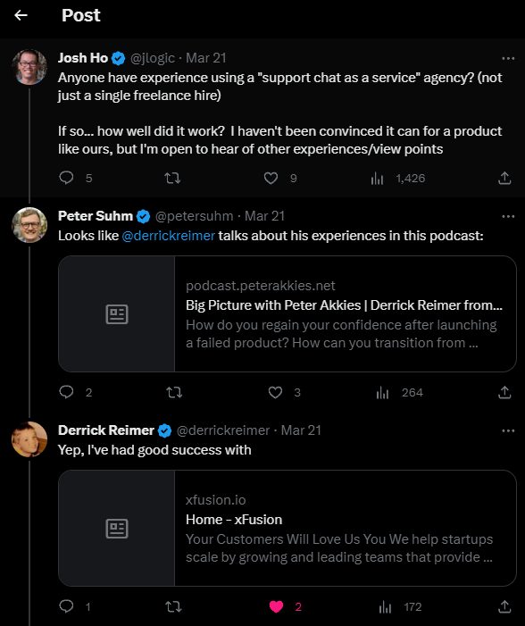
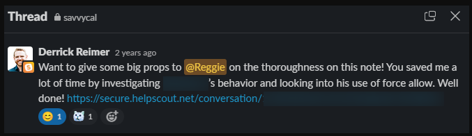
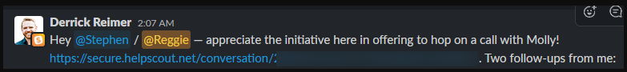
SavvyCal customers do not know they are writing to xFusion. They think they are writing to SavvyCal. That is the point. The reactions came back the way they come back when support is genuinely good.
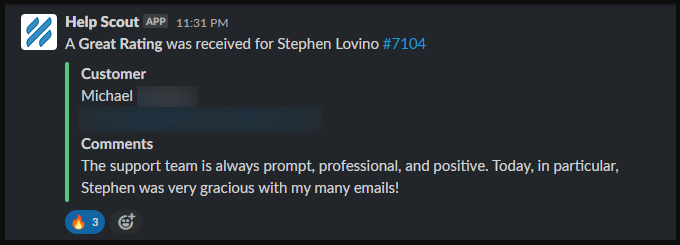
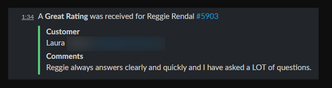
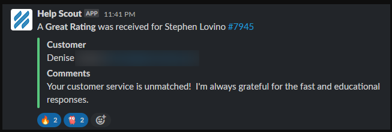
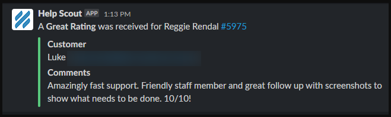
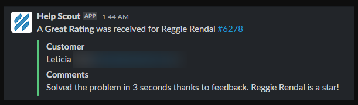
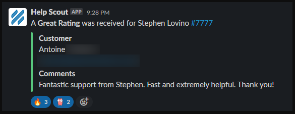
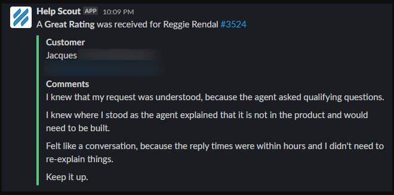
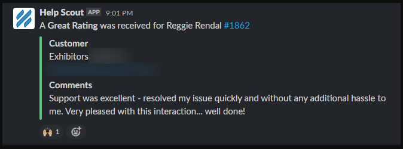
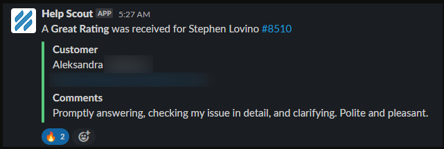
The numbers and the lived experience moved together.
The partnership started in May 2021 and has continued since. Customer satisfaction stayed high, reply times stayed fast, and the work the placement handled kept growing as the SavvyCal team trusted them with more of what used to be on the founder's plate.
If your customer support is starting to slip, or you are about to lose the one person holding it together, we can help. We will recruit, vet, place, train, and manage a senior, AI-trained support agent for your business. You will work with them for 30 days before paying anything. If you are not happy, you walk away free.
30 minutes. No commitment. No credit card. You'll talk directly with our founding team.